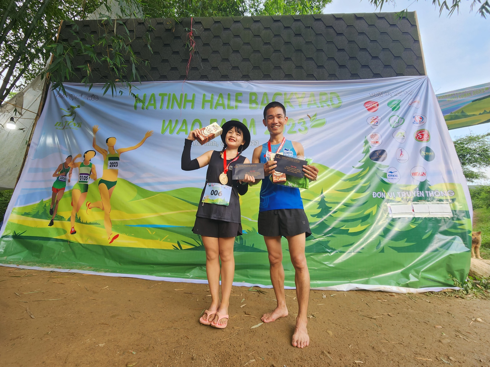
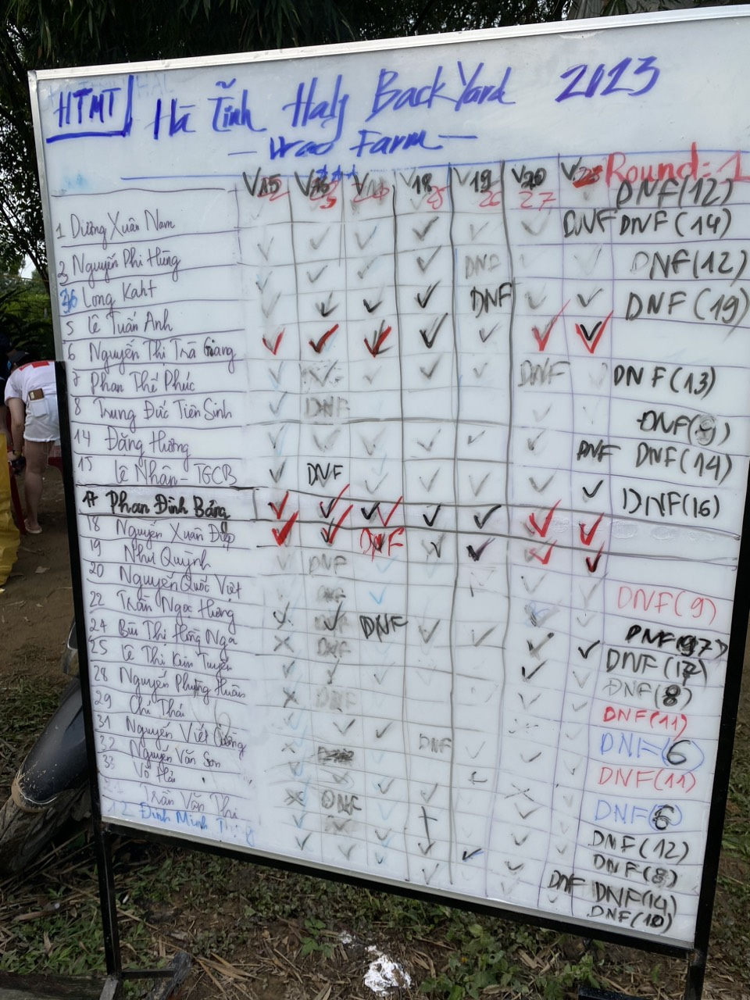
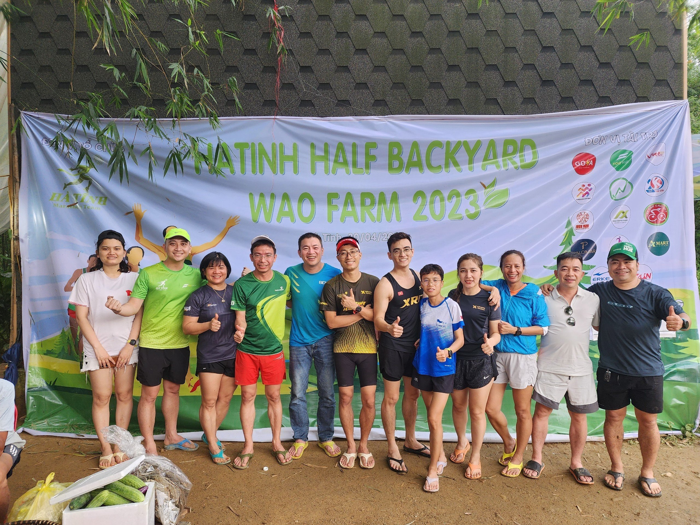
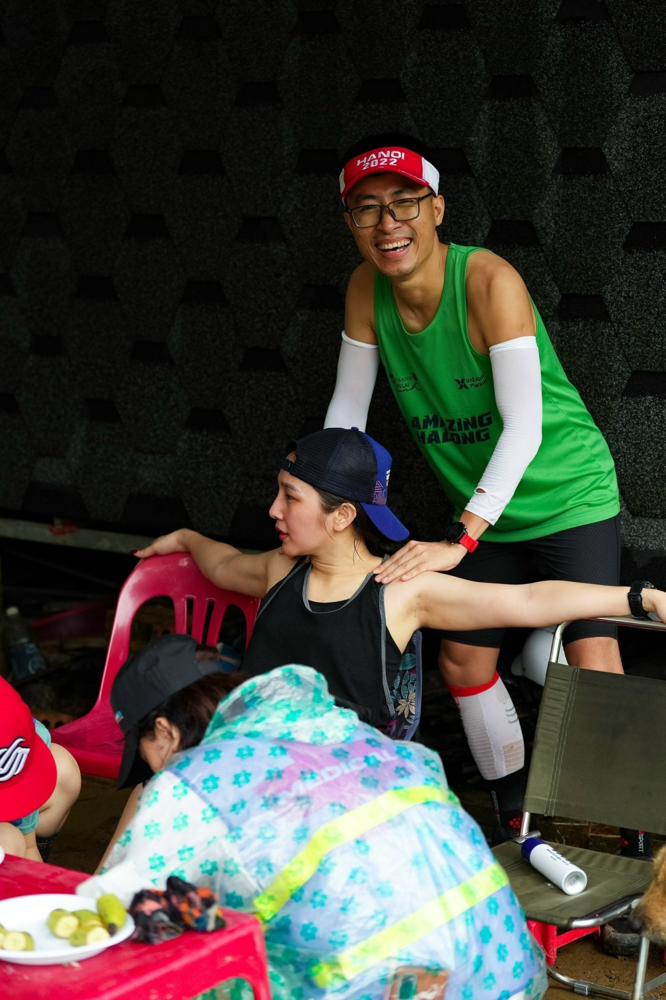
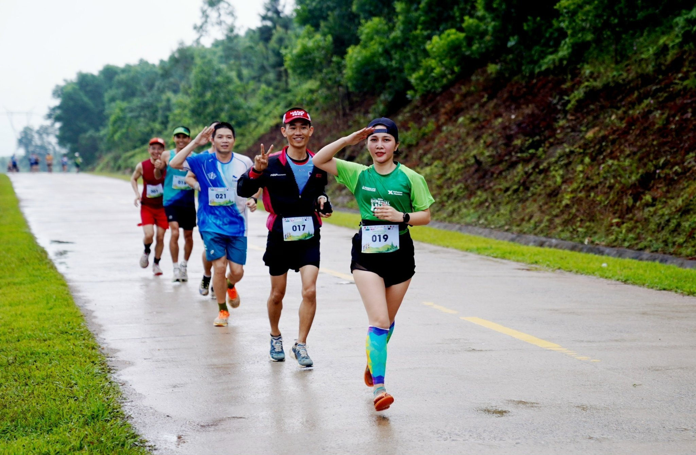
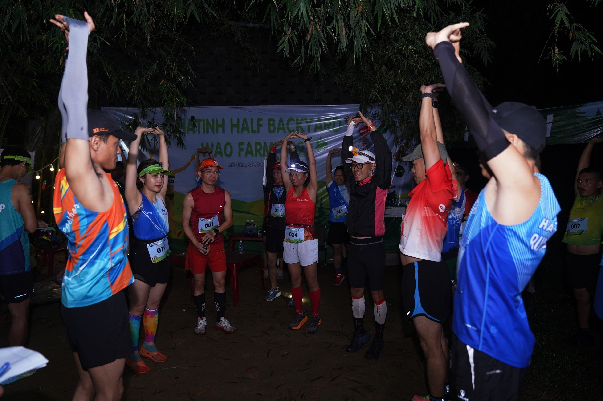
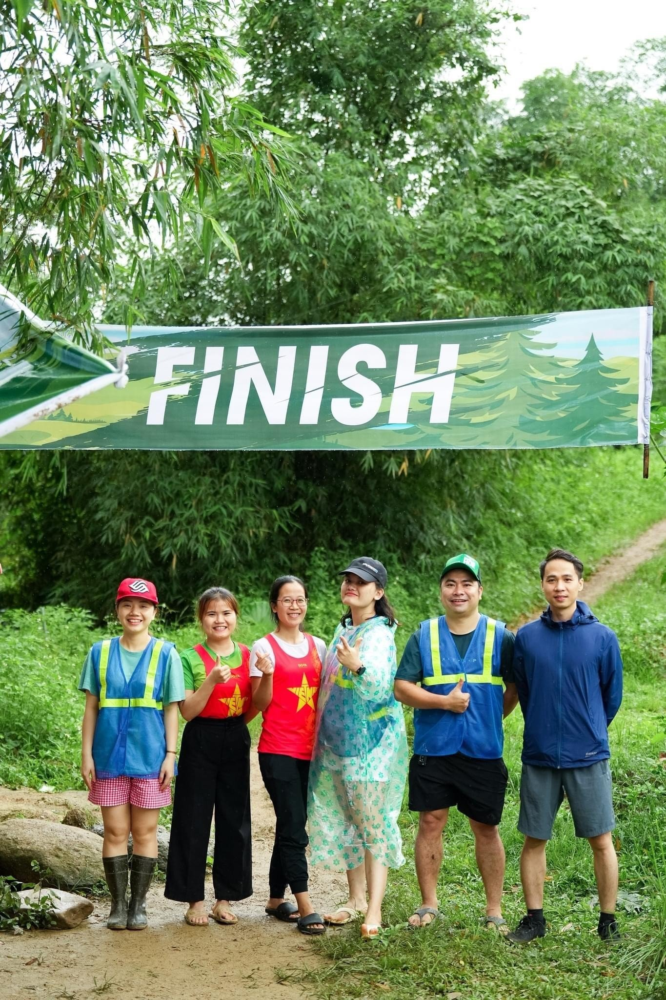
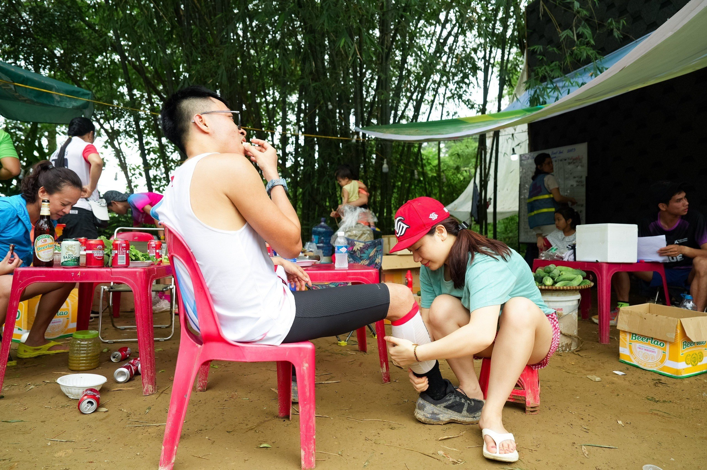
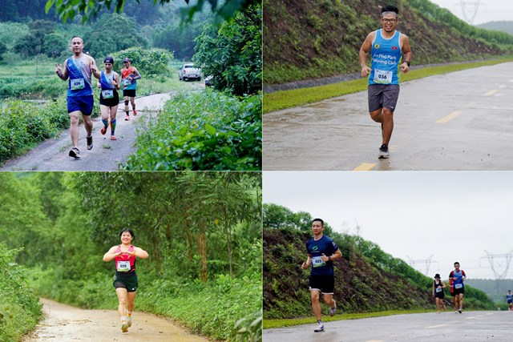
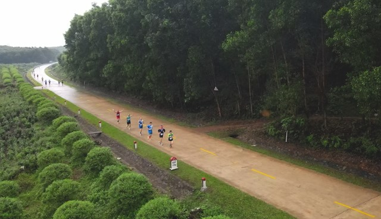

Hà Tĩnh Half Back Yard – Wao Farm 2023
Hà Tĩnh Half Back Yard – Wao Farm 2023 là giải chạy được tổ chức bởi Hà Tĩnh Marathon Team, giải chạy backyard lần đầu tiên được tổ chức tại Hà Tĩnh.
Với hình thức chạy vòng lặp (một vòng 3,35km; COT 30 phút) để tìm ra người có sức bền tốt nhất, được tổ chức vào ngày Chủ nhật 30/4 tại WAO FARM, cách trung tâm thành phố Hà Tĩnh chỉ 15km đã diễn ra sôi động và mang nhiều ý nghĩa.
Giải chạy quy tụ gần 100 thành viên tham gia, bao gồm cả VĐV và đội ngũ supports. Ngoài sự kiện chạy bộ thì BTC giải cùng mỗi VĐV, gia đình tham gia, đã trồng 1 cây xanh lưu niệm tại WAO FARM, hứa hẹn sự trở lại của những lần sau.
Sau một ngày thi đấu, 2 vận động viên là Nguyễn Thị Trà Giang, Phan Đình Bảng đã giành được chiến thắng với số vòng chạy là 25 vòng (tương đương 84 km), đạt danh hiệu Queen, King.
Giải cũng đã được báo Đại Đoàn Kết hỗ trợ đưa tin, nhằm khuyến khích phong trào chạy bộ, thể thao, rèn luyện sức khoẻ tại bài viết Marathon trào lưu đẹp của những người trẻ ở Hà Tĩnh
Các vđv có thể xem bảng xếp hạng, và lấy giấy chứng nhận hoàn thành tại đây https://nghienchaybo.com/event-dashboard/ha-tinh-half-back-yard-wao-farm-2023
Một số hình ảnh tại giải Hà Tĩnh Half Back Yard – Wao Farm 2023
         
Link tải hình
#HTR-HTMT
#HaTinhRunners